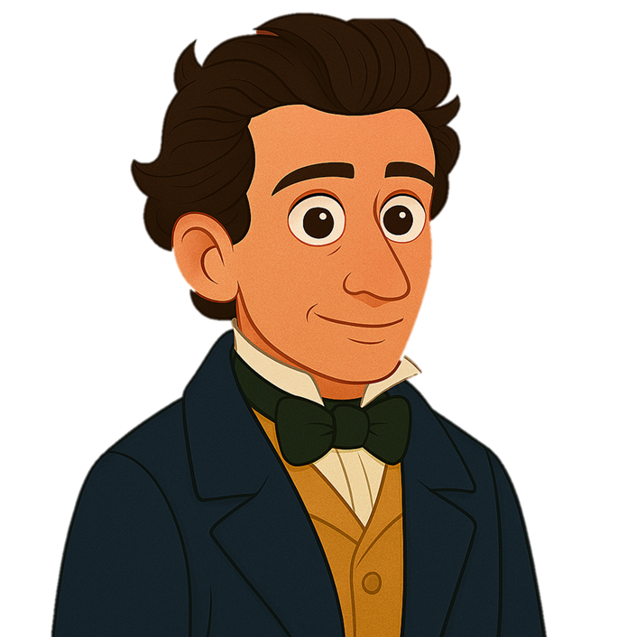

Tic Tac Toe – Giacomo Leopardi

Professoressa Antonella Magurno
Clicca le caselle, leggi le attività e spunta “Completata”. Il progresso resta salvato nel browser.
Tutte le colonne
Colonna 1 · Testo
Colonna 2 · Creativo
Colonna 3 · Ricerca
Reset progresso
Stampa/Esporta
Colonna 1 · Testo
Colonna 2 · Creativo
Colonna 3 · Ricerca
Attività
Segna come completata
Chiudi